SensuCarens
since 2008, KYOTO
Scroll
Information
News
- 2026.07.24 LIVE 京都「Live & Salon 夜想」の「人形劇とライブ 夜想の夏祭り」に出演しました
- 2025.11.28 MUSIC ミュージックビデオ「深海より」を公開しました
- 2025.04.12 MUSIC ミュージックビデオ「Blue Train」を公開しました
- 2024.08.12 SNS TikTokアカウントを開設しました
- 2024.08.11 SNS Instagram アカウントを開設しました
Statement
About

静けさの中に、確かな熱を。
SensuCarens （センスカレンス）
― 名 【ラテン語】無意味／無意識
削ぎ落とした音と言葉で日常の奥にある感情の輪郭をなぞる。
過剰さを避けながらも、聴く者の記憶に長く残る景色を鳴らし続けたい。
- Gt.まつじゅん
- Vo.千秋
- Dr.晃次郎
- Ba.恭亮
- 2008.Dec. 京都にて結成.
- 2009.Jan. 1st Demo 音源 "SensuCarens"
- 2010.Jun. 2nd Demo 音源 "Pink into Pink"
- 2014.Oct. 東京へ拠点を移動.
- 2020.Aug. 3rd Demo 音源 "ambiguous"
- 2024~ 楽曲制作をメインに活動中
Photo: 三谷飾屋
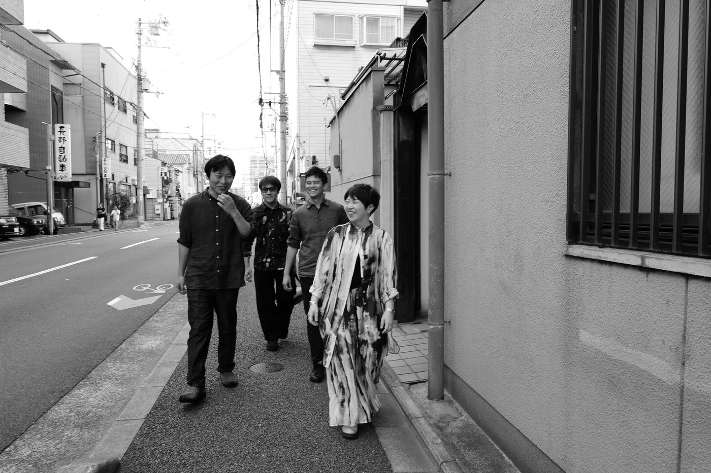
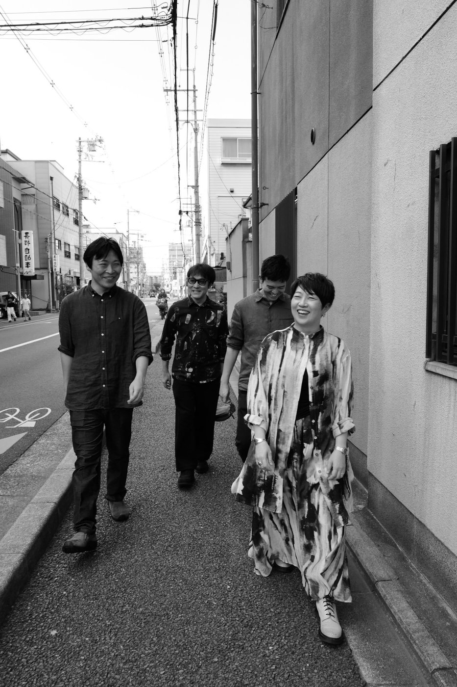
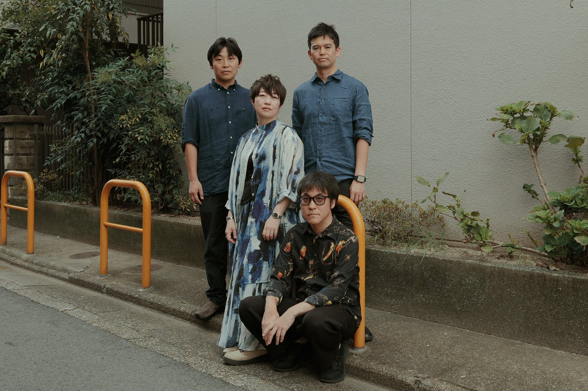
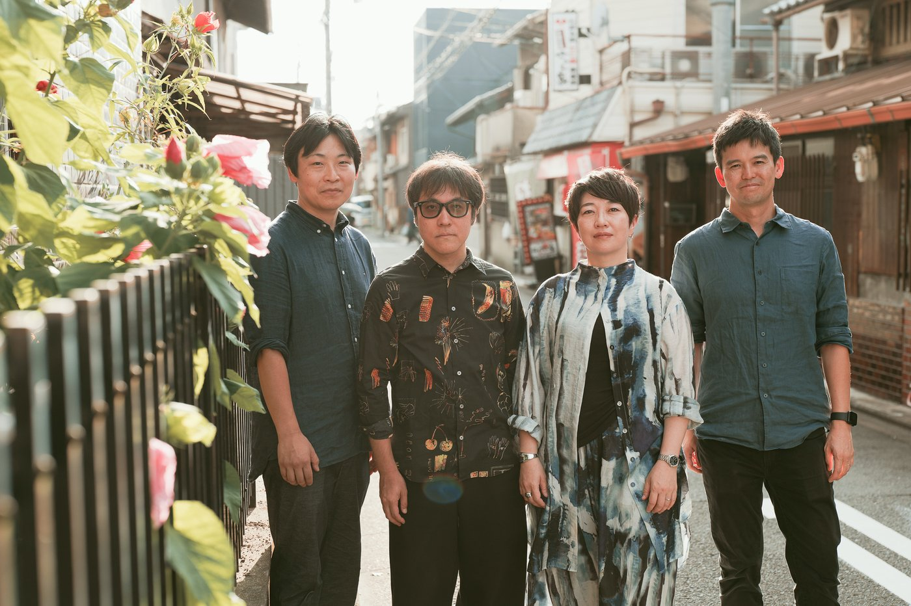
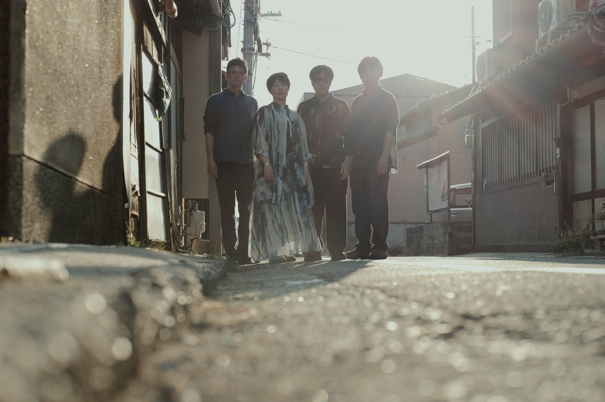
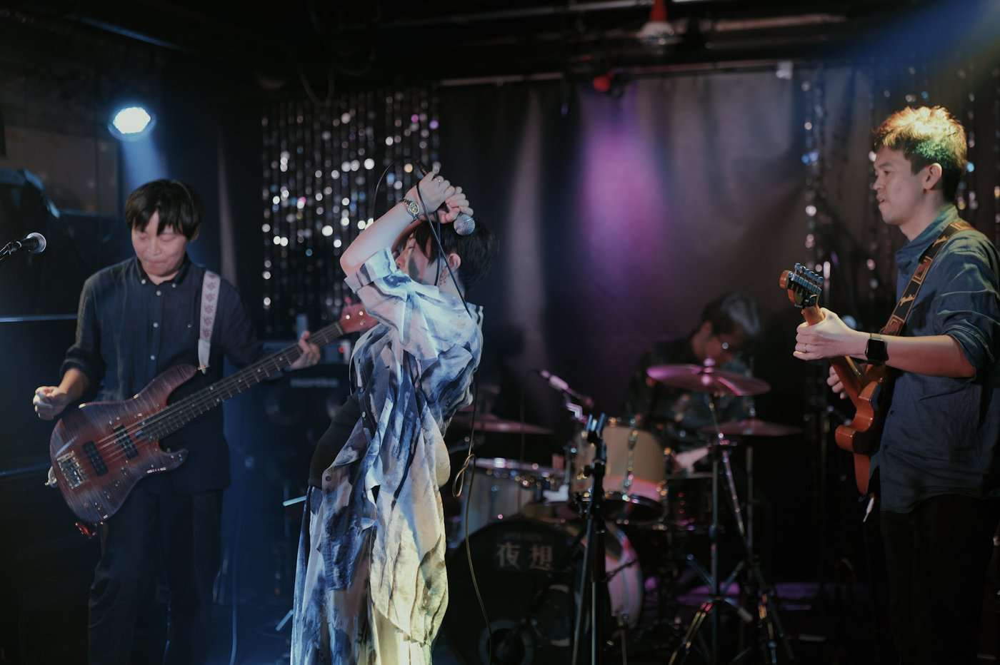
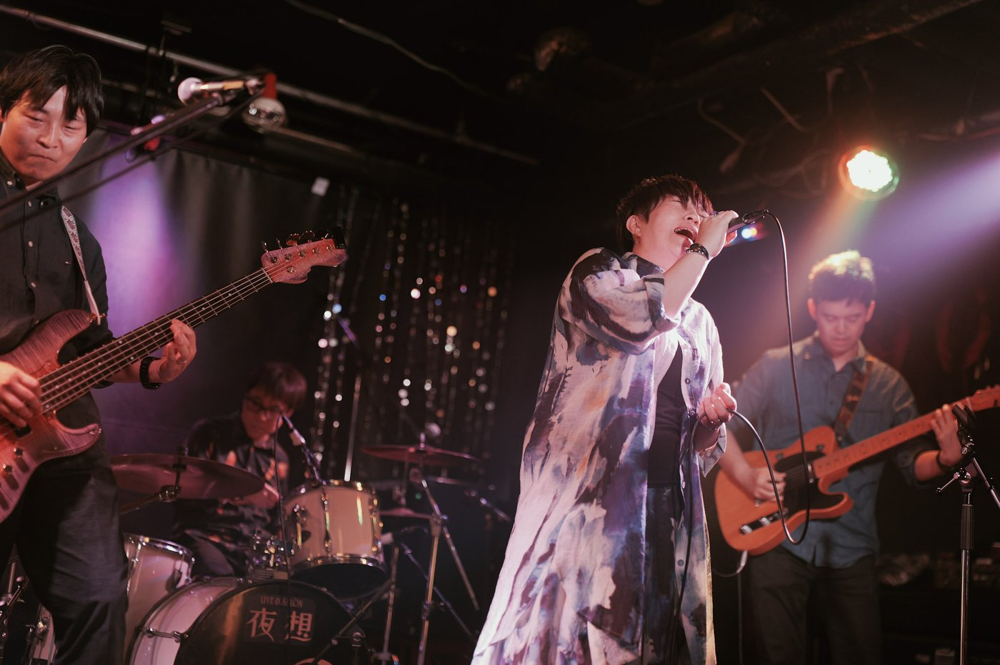
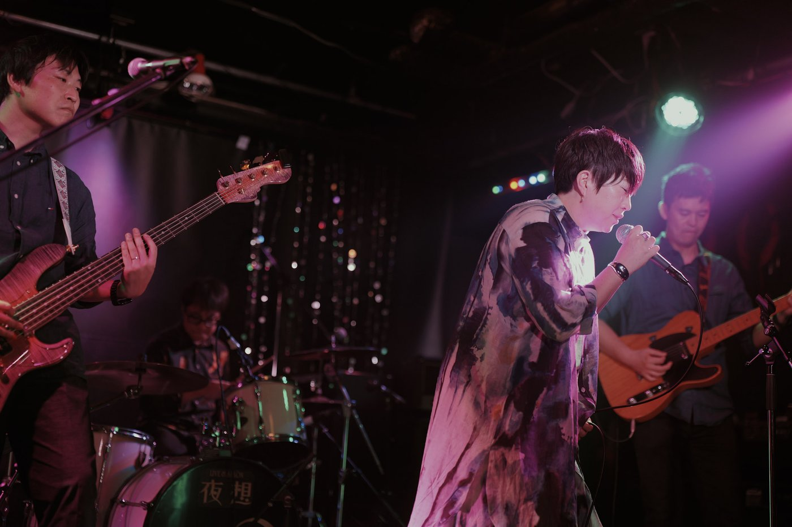
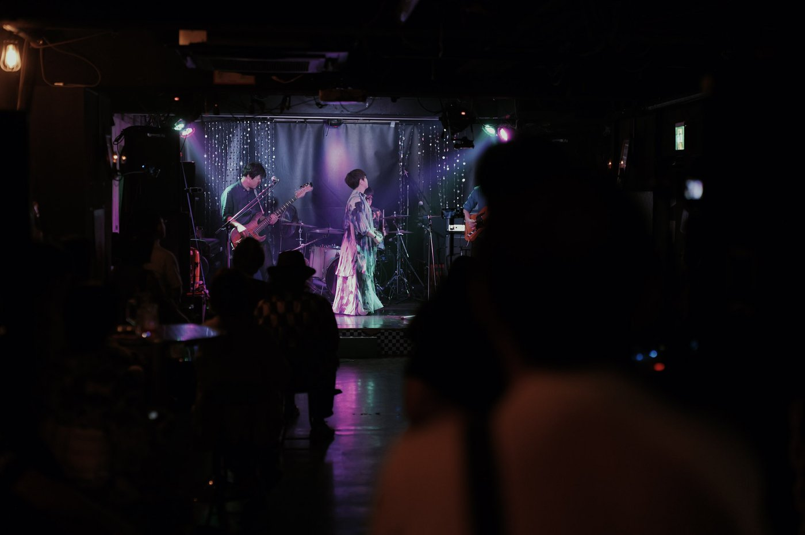
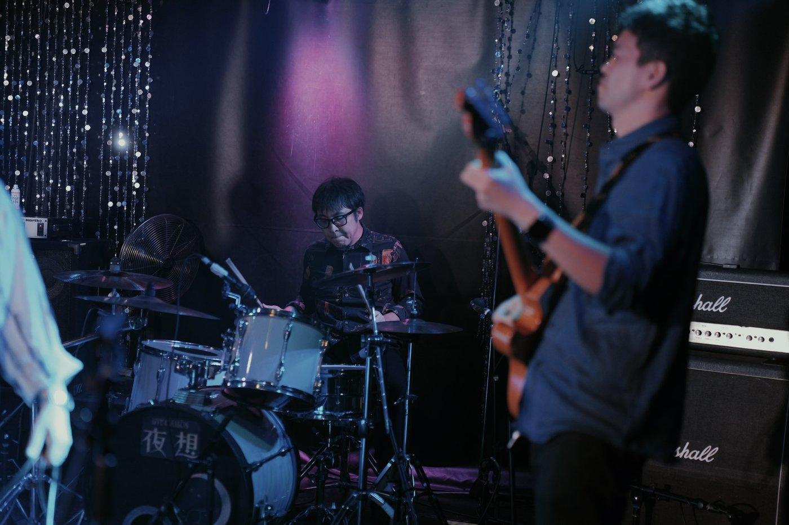
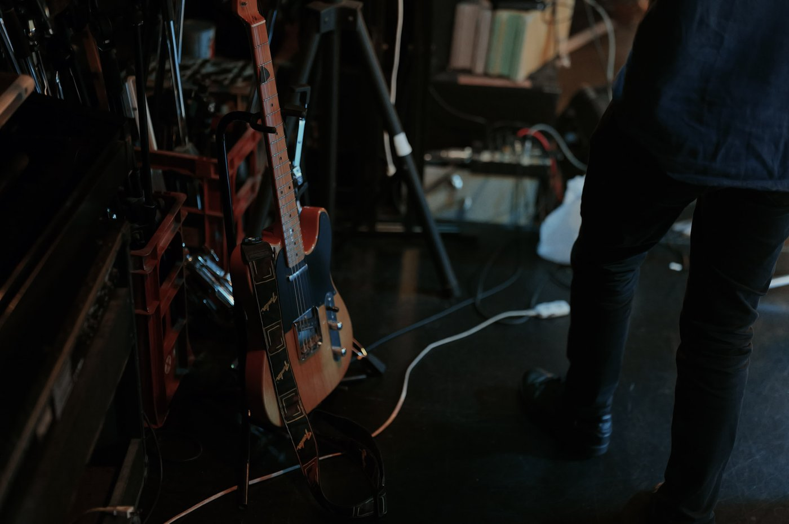
Discography
Works

SensuCarens
- ネジ
- How Far

Pink into Pink
- Pink into Pink
- 無音の証明
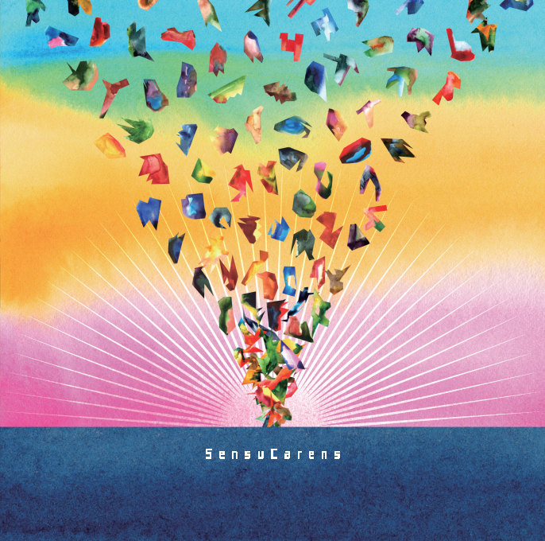
ambiguous
- 最期の日
- アルコールと果実
- ambiguous
Youtube
Music
Schedule
Live
-
2026.07.24 (Fri) Live & Salon 夜想（四条大宮） / 京都
人形劇とライブ 夜想の夏祭り
OPEN 17:30 / START 18:00
前売 ¥2,500 / 当日 ¥3,000（+1drink ¥600）
共演: タチメ+ピーター+ばあし (DUST) ／ 忌
-
2016.05.15 (Sun) Live Music SUNFACE（新宿） / 東京
FOREVER SONGS
OPEN 18:00 / START 18:30
前売 ¥2,000 / 当日 ¥2,000
備考: 新ドラマー ゆたぞう を迎えての東京初ライブ